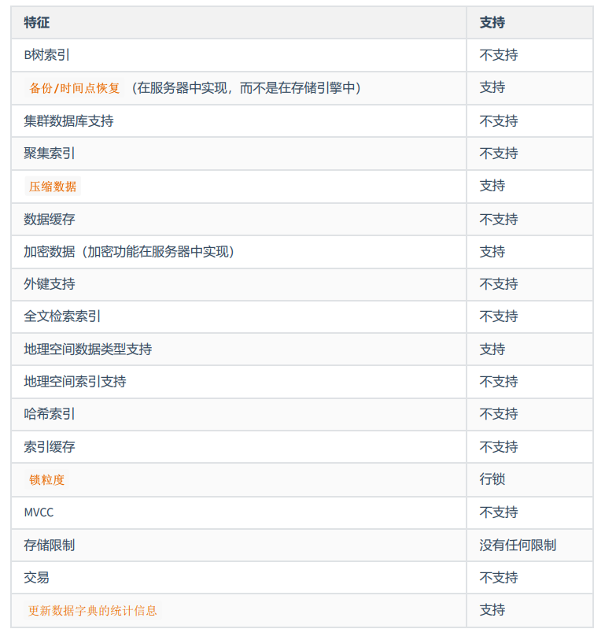
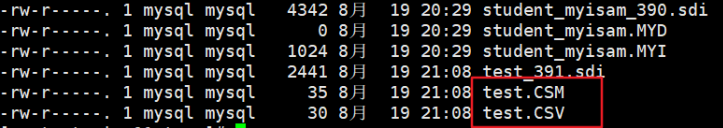
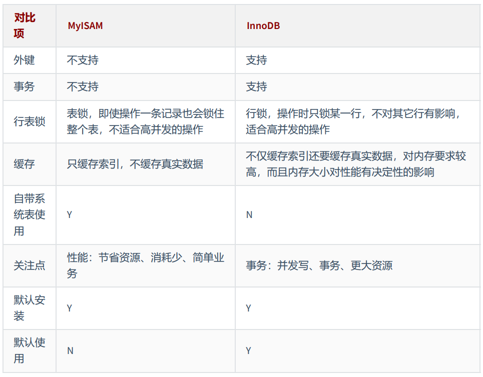

1. 查看存储引擎
查看mysql提供什么存储引擎：
1
2
3
4
5
6
7
8
9
10
11
12
13
14
15
mysql> show engines;
+--------------------+---------+----------------------------------------------------------------+--------------+------+------------+
| Engine | Support | Comment | Transactions | XA | Savepoints |
+--------------------+---------+----------------------------------------------------------------+--------------+------+------------+
| ARCHIVE | YES | Archive storage engine | NO | NO | NO |
| BLACKHOLE | YES | /dev/null storage engine (anything you write to it disappears) | NO | NO | NO |
| MRG_MYISAM | YES | Collection of identical MyISAM tables | NO | NO | NO |
| FEDERATED | NO | Federated MySQL storage engine | NULL | NULL | NULL |
| MyISAM | YES | MyISAM storage engine | NO | NO | NO |
| PERFORMANCE_SCHEMA | YES | Performance Schema | NO | NO | NO |
| InnoDB | DEFAULT | Supports transactions, row-level locking, and foreign keys | YES | YES | YES |
| MEMORY | YES | Hash based, stored in memory, useful for temporary tables | NO | NO | NO |
| CSV | YES | CSV storage engine | NO | NO | NO |
+--------------------+---------+----------------------------------------------------------------+--------------+------+------------+
9 rows in set (0.00 sec)
2. 设置系统默认的存储引擎
1
2
3
4
5
6
7
8
9
10
11
# 查询
SELECT @@default_storage_engine;
+--------------------------+
| @@default_storage_engine |
+--------------------------+
| InnoDB |
+--------------------------+
1 row in set (0.00 sec)
修改默认的存储引擎
如果在创建表的语句中没有显式指定表的存储引擎的话，那就会默认使用 InnoDB 作为表的存储引擎。 如果我们想改变表的默认存储引擎的话，可以这样写启动服务器的命令行：
1
SET DEFAULT_STORAGE_ENGINE=MyISAM;
或者修改 my.cnf 文件：
1
default-storage-engine=MyISAM
1
2
# 重启服务
systemctl restart mysqld.service
3. 设置表的存储引擎
存储引擎是负责对表中的数据进行提取和写入工作的，我们可以为 不同的表设置不同的存储引擎 ，也就是 说不同的表可以有不同的物理存储结构，不同的提取和写入方式。
3.1 创建表时指定存储引擎
我们之前创建表的语句都没有指定表的存储引擎，那就会使用默认的存储引擎 InnoDB 。如果我们想显 式的指定一下表的存储引擎，那可以这么写：
CREATE TABLE 表名(
建表语句;
) ENGINE = 存储引擎名称;
3.2 修改表的存储引擎
如果表已经建好了，我们也可以使用下边这个语句来修改表的存储引擎：
1
ALTER TABLE 表名 ENGINE = 存储引擎名称;
比如我们修改一下 engine_demo_table 表的存储引擎：
1
2
3
mysql> ALTER TABLE engine_demo_table ENGINE = InnoDB;
Query OK, 0 rows affected (0.05 sec)
Records: 0 Duplicates: 0 Warnings: 0
这时我们再查看一下 engine_demo_table 的表结构：
mysql> SHOW CREATE TABLE engine_demo_table\G
*************************** 1. row ***************************
Table: engine_demo_table
Create Table: CREATE TABLE `engine_demo_table` (
`i` int(11) DEFAULT NULL
) ENGINE=InnoDB DEFAULT CHARSET=utf8
1 row in set (0.01 sec)
4. 引擎介绍
4.1 InnoDB 引擎：具备外键支持功能的事务存储引擎
- MySQL从3.23.34a开始就包含InnoDB存储引擎。
大于等于5.5之后，默认采用InnoDB引擎。 - InnoDB是MySQL的
默认事务型引擎，它被设计用来处理大量的短期(short-lived)事务。可以确保事务 的完整提交(Commit)和回滚(Rollback)。 - 除了增加和查询外，还需要更新、删除操作，那么，应优先选择InnoDB存储引擎。
- 除非有非常特别的原因需要使用其他的存储引擎，否则应该优先考虑InnoDB引擎。
- 数据文件结构：（在《第02章_MySQL数据目录》章节已讲）
- 表名.frm 存储表结构（MySQL8.0时，合并在表名.ibd中）
- 表名.ibd 存储数据和索引
- InnoDB是 为
处理巨大数据量的最大性能设计。- 在以前的版本中，字典数据以元数据文件、非事务表等来存储。现在这些元数据文件被删除 了。比如：
.frm ， .par ， .trn ， .isl ， .db.opt等都在MySQL8.0中不存在了。
- 在以前的版本中，字典数据以元数据文件、非事务表等来存储。现在这些元数据文件被删除 了。比如：
- 对比MyISAM的存储引擎， InnoDB写的处理效率差一些 ，并且会占用更多的磁盘空间以保存数据和 索引。
- MyISAM只缓存索引，不缓存真实数据；InnoDB不仅缓存索引还要缓存真实数据，
对内存要求较高，而且内存大小对性能有决定性的影响。
4.2 MyISAM 引擎：主要的非事务处理存储引擎
- MyISAM提供了大量的特性，包括全文索引、压缩、空间函数(GIS)等，但
MyISAM 不支持事务、行级 锁、外键，有一个毫无疑问的缺陷就是 崩溃后无法安全恢复 。 5.5之前默认的存储引擎- 优势是访问的
速度快，对事务完整性没有要求或者以SELECT、INSERT为主的应用 - 针对数据统计有额外的常数存储。故而 count(*) 的查询效率很高
- 数据文件结构：（在《第02章_MySQL数据目录》章节已讲）
- 表名.frm 存储表结构
- 表名.MYD 存储数据 (MYData)
- 表名.MYI 存储索引 (MYIndex)
- 应用场景：只读应用或者以读为主的业务
4.3 Archive 引擎：用于数据存档
下表展示了ARCHIVE 存储引擎功能

4.4 Blackhole 引擎：丢弃写操作，读操作会返回空内容
4.5 CSV 引擎：存储数据时，以逗号分隔各个数据项
使用案例如下
mysql> CREATE TABLE test (i INT NOT NULL, c CHAR(10) NOT NULL) ENGINE = CSV;
Query OK, 0 rows affected (0.06 sec)
mysql> INSERT INTO test VALUES(1,'record one'),(2,'record two');
Query OK, 2 rows affected (0.05 sec)
Records: 2 Duplicates: 0 Warnings: 0
创建CSV表还会创建相应的 元文件 ，用于 存储表的状态 和 表中存在的行数 。此文件的名称与表的名称相 同，后缀为 CSM 。如图所示

如果检查 test.CSV 通过执行上述语句创建的数据库目录中的文件，其内容使用Notepad++打开如下：
1
2
"1","record one"
"2","record two"
这种格式可以被 Microsoft Excel 等电子表格应用程序读取，甚至写入。
4.6 Memory 引擎：置于内存的表
概述：Memory采用的逻辑介质是 内存 ， 响应速度很快 ，但是当mysqld守护进程崩溃的时候 数据会丢失 。另 外，要求存储的数据是数据长度不变的格式，比如，Blob和Text类型的数据不可用(长度不固定的)。
主要特征：
- Memory同时 支持
哈希（HASH）索引和B+树索引。 - Memory表至少比MyISAM表要
快一个数量级。 - MEMORY 表的大小是受到限制 的。表的大小主要取决于两个参数，分别是
max_rows和max_heap_table_size。其中，max_rows可以在创建表时指定；max_heap_table_size的大小默 认为16MB，可以按需要进行扩大。 - 数据文件与索引文件分开存储。
- 缺点：其数据易丢失，生命周期短。基于这个缺陷，选择MEMORY存储引擎时需要特别小心。
使用Memory存储引擎的场景：
1.目标数据比较小 ，而且非常 频繁的进行访问 ，在内存中存放数据，如果太大的数据会造成 内存溢 出 。可以通过参数 max_heap_table_size 控制Memory表的大小，限制Memory表的最大的大 小。
2.如果 数据是临时的 ，而且 必须立即可用 得到，那么就可以放在内存中。
3.存储在Memory表中的数据如果突然间 丢失的话也没有太大的关系 。
4.7 Federated 引擎：访问远程表
Federated引擎是访问其他MySQL服务器的一个 代理 ，尽管该引擎看起来提供了一种很好的 跨服务 器的灵活性 ，但也经常带来问题，因此 默认是禁用的 。
4.8 Merge引擎：管理多个MyISAM表构成的表集合
4.9 NDB引擎：MySQL集群专用存储引擎
也叫做 NDB Cluster 存储引擎，主要用于 MySQL Cluster 分布式集群 环境，类似于 Oracle 的 RAC 集 群。
4.10 引擎对比
MySQL中同一个数据库，不同的表可以选择不同的存储引擎。如下表对常用存储引擎做出了对比。
| 特点 | MyISAM | InnoDB | MEMORY | MERGE | NDB |
|---|---|---|---|---|---|
| 存储限制 | 有 | 64TB | 有 | 没有 | 有 |
| 事物安全性 | 支持 | ||||
| 锁机制 | 表锁，及时操作一条记录也会锁住整个表；不适合高并发 | 行锁，操作时只锁某一行，不对其他行有影响，适合高并发 | 表锁 | 表锁 | 行锁 |
| B树索引 | 支持 | 支持 | 支持 | 支持 | 支持 |
| 哈希索引 | 支持 | 支持 | |||
| 全文索引 | 支持 | ||||
| 集群索引 | 支持 | ||||
| 数据缓存 | 支持 | 支持 | 支持 | ||
| 索引缓存 | 只缓存索引，不缓存数据 | 不仅缓存索引，还要缓存真实数据，对内存要求较高，而且内存对性能有决定性影响 | 支持 | 支持 | 支持 |
| 数据可压缩 | 支持 | ||||
| 空间使用 | 低 | 高 | N/A | 低 | 低 |
| 内存使用 | 低 | 高 | 中等 | 低 | 高 |
| 批量掺入的速度 | 高 | 低 | 高 | 高 | 高 |
| 支持外键 | 支持 |
这些东西没必要立即就给记住，列出来的目的就是想让大家明白不同的存储引擎支持不同的功能。
其实我们最常用的就是 InnoDB 和 MyISAM ，有时会提一下Memory 。其中 InnoDB 是 MySQL 默认的存 储引擎。
5. MyISAM和InnoDB
很多人对 InnoDB 和 MyISAM 的取舍存在疑问，到底选择哪个比较好呢？
MySQL5.5之前的默认存储引擎是MyISAM，5.5之后改为了InnoDB。

6. 阿里巴巴、淘宝用哪个
- Percona 为 MySQL 数据库服务器进行了改进，在功能和性能上较 MySQL 有很显著的提升。
- 该版本提升了在高负载情况下的 InnoDB 的性能、为 DBA 提供一些非常有用的性能诊断工具；另外 有更多的参数和命令来控制服务器行为。
- 该公司新建了一款存储引擎叫 Xtradb 完全可以替代 Innodb ，并且在性能和并发上做得更好
- 阿里巴巴大部分mysql数据库其实使用的percona的原型加以修改。
课外补充：
1、InnoDB表的优势
InnoDB存储引擎在实际应用中拥有诸多优势，比如操作便利、提高了数据库的性能、维护成本低等。如 果由于硬件或软件的原因导致服务器崩溃，那么在重启服务器之后不需要进行额外的操作。InnoDB崩溃 恢复功能自动将之前提交的内容定型，然后撤销没有提交的进程，重启之后继续从崩溃点开始执行。
InnoDB存储引擎在主内存中维护缓冲池，高频率使用的数据将在内存中直接被处理。这种缓存方式应用 于多种信息，加速了处理进程。
在专用服务器上，物理内存中高达80%的部分被应用于缓冲池。如果需要将数据插入不同的表中，可以 设置外键加强数据的完整性。更新或者删除数据，关联数据将会被自动更新或删除。如果试图将数据插 入从表，但在主表中没有对应的数据，插入的数据将被自动移除。如果磁盘或内存中的数据出现崩溃， 在使用脏数据之前，校验和机制会发出警告。当每个表的主键都设置合理时，与这些列有关的操作会被 自动优化。插入、更新和删除操作通过做改变缓冲自动机制进行优化。 InnoDB不仅支持当前读写，也会 缓冲改变的数据到数据流磁盘 。
InnoDB的性能优势不只存在于长时运行查询的大型表。在同一列多次被查询时，自适应哈希索引会提高 查询的速度。使用InnoDB可以压缩表和相关的索引，可以 在不影响性能和可用性的情况下创建或删除索 引 。对于大型文本和BLOB数据，使用动态行形式，这种存储布局更高效。通过查询 INFORMATION_SCHEMA库中的表可以监控存储引擎的内部工作。在同一个语句中，InnoDB表可以与其他 存储引擎表混用。即使有些操作系统限制文件大小为2GB，InnoDB仍然可以处理。 当处理大数据量时， InnoDB兼顾CPU，以达到最大性能 。
2、InnoDB和ACID模型
ACID模型是一系列数据库设计规则，这些规则着重强调可靠性，而可靠性对于商业数据和任务关键型应 用非常重要。MySQL包含类似InnoDB存储引擎的组件，与ACID模型紧密相连，这样出现意外时，数据不 会崩溃，结果不会失真。如果依赖ACID模型，可以不使用一致性检查和崩溃恢复机制。如果拥有额外的 软件保护，极可靠的硬件或者应用可以容忍一小部分的数据丢失和不一致，可以将MySQL设置调整为只 依赖部分ACID特性，以达到更高的性能。下面讲解InnoDB存储引擎与ACID模型相同作用的四个方面。
1. 原子方面
ACID的原子方面主要涉及InnoDB事务，与MySQL相关的特性主要包括：
- 自动提交设置。
- COMMIT语句。
- ROLLBACK语句。
- 操作INFORMATION_SCHEMA库中的表数据。
2. 一致性方面
ACID模型的一致性主要涉及保护数据不崩溃的内部InnoDB处理过程，与MySQL相关的特性 主要包括：
- InnoDB双写缓存。
- InnoDB崩溃恢复。
3. 隔离方面
隔离是应用于事务的级别，与MySQL相关的特性主要包括：
- 自动提交设置。
- SET ISOLATION LEVEL语句。
- InnoDB锁的低级别信息。
4. 耐久性方面
ACID模型的耐久性主要涉及与硬件配置相互影响的MySQL软件特性。由于硬件复杂多样 化，耐久性方面没有具体的规则可循。与MySQL相关的特性有：
- InnoDB双写缓存，通过innodb_doublewrite配置项配置。
- 配置项innodb_flush_log_at_trx_commit。
- 配置项sync_binlog。
- 配置项innodb_file_per_table。
- 存储设备的写入缓存。
- 存储设备的备用电池缓存。
- 运行MySQL的操作系统。
- 持续的电力供应。
- 备份策略。
- 对分布式或托管的应用，最主要的在于硬件设备的地点以及网络情况。
3、InnoDB架构
1. 缓冲池
缓冲池是主内存中的一部分空间，用来缓存已使用的表和索引数据。缓冲池使得经常被使用的 数据能够直接在内存中获得，从而提高速度。
2.更改缓存
更改缓存是一个特殊的数据结构，当受影响的索引页不在缓存中时，更改缓存会缓存辅助索 引页的更改。索引页被其他读取操作时会加载到缓存池，缓存的更改内容就会被合并。不同于集群索 引，辅助索引并非独一无二的。当系统大部分闲置时，清除操作会定期运行，将更新的索引页刷入磁 盘。更新缓存合并期间，可能会大大降低查询的性能。在内存中，更新缓存占用一部分InnoDB缓冲池。 在磁盘中，更新缓存是系统表空间的一部分。更新缓存的数据类型由innodb_change_buffering配置项管 理。
3. 自适应哈希索引
自适应哈希索引将负载和足够的内存结合起来，使得InnoDB像内存数据库一样运行， 不需要降低事务上的性能或可靠性。这个特性通过innodb_adaptive_hash_index选项配置，或者通过– skip-innodb_adaptive_hash_index命令行在服务启动时关闭。
4. 重做日志缓存
重做日志缓存存放要放入重做日志的数据。重做日志缓存大小通过 innodb_log_buffer_size配置项配置。重做日志缓存会定期地将日志文件刷入磁盘。大型的重做日志缓存 使得大型事务能够正常运行而不需要写入磁盘。
5. 系统表空间
系统表空间包括InnoDB数据字典、双写缓存、更新缓存和撤销日志，同时也包括表和索引 数据。多表共享，系统表空间被视为共享表空间。
6. 双写缓存
双写缓存位于系统表空间中，用于写入从缓存池刷新的数据页。只有在刷新并写入双写缓存 后，InnoDB才会将数据页写入合适的位置。
7. 撤销日志
撤销日志是一系列与事务相关的撤销记录的集合，包含如何撤销事务最近的更改。如果其他 事务要查询原始数据，可以从撤销日志记录中追溯未更改的数据。撤销日志存在于撤销日志片段中，这 些片段包含于回滚片段中。
8. 每个表一个文件的表空间
每个表一个文件的表空间是指每个单独的表空间创建在自身的数据文件中， 而不是系统表空间中。这个功能通过innodb_file_per_table配置项开启。每个表空间由一个单独的.ibd数 据文件代表，该文件默认被创建在数据库目录中。
9. 通用表空间
使用CREATE TABLESPACE语法创建共享的InnoDB表空间。通用表空间可以创建在MySQL数 据目录之外能够管理多个表并支持所有行格式的表。
10. 撤销表空间
撤销表空间由一个或多个包含撤销日志的文件组成。撤销表空间的数量由 innodb_undo_tablespaces配置项配置。
11. 临时表空间
用户创建的临时表空间和基于磁盘的内部临时表都创建于临时表空间。 innodb_temp_data_file_path配置项定义了相关的路径、名称、大小和属性。如果该值为空，默认会在 innodb_data_home_dir变量指定的目录下创建一个自动扩展的数据文件。
12. 重做日志
重做日志是基于磁盘的数据结构，在崩溃恢复期间使用，用来纠正数据。正常操作期间， 重做日志会将请求数据进行编码，这些请求会改变InnoDB表数据。遇到意外崩溃后，未完成的更改会自 动在初始化期间重新进行